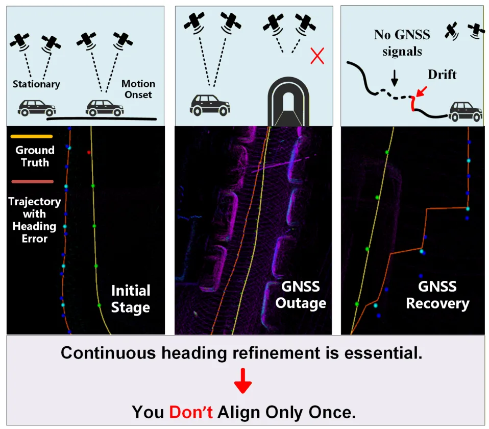
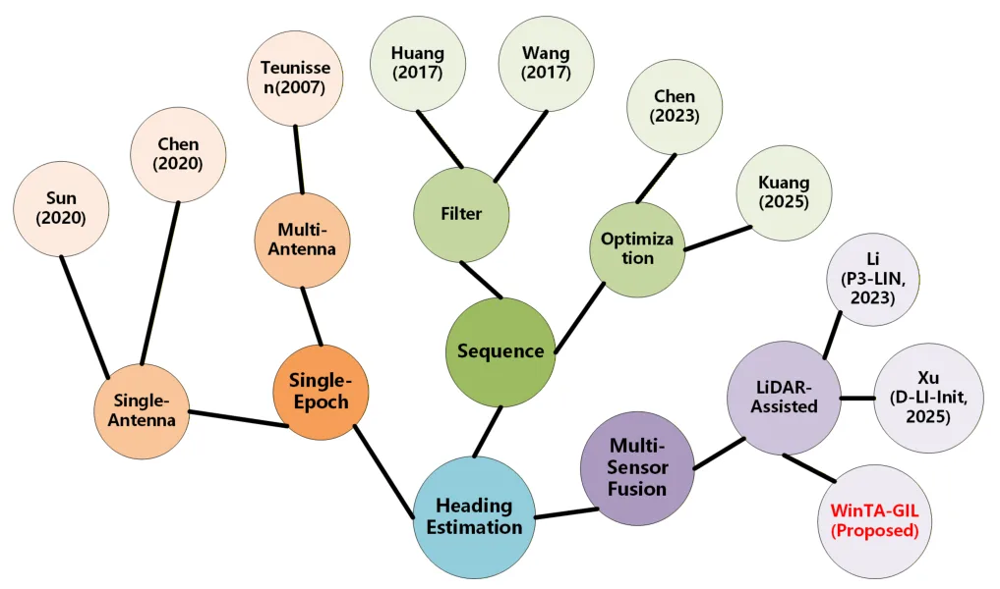
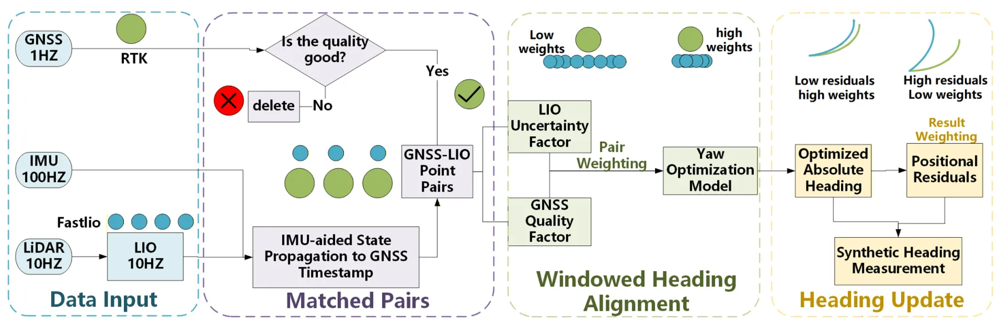
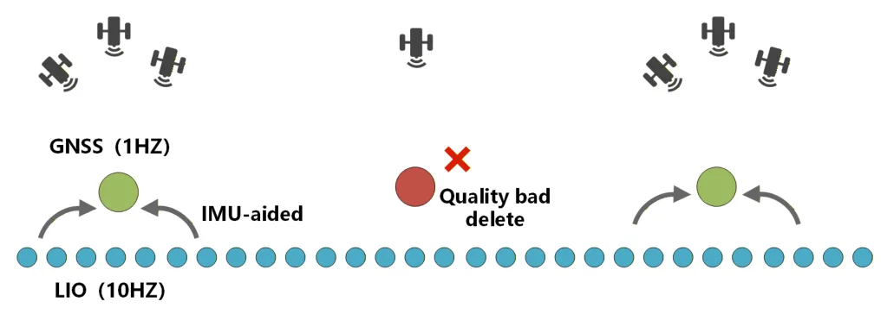
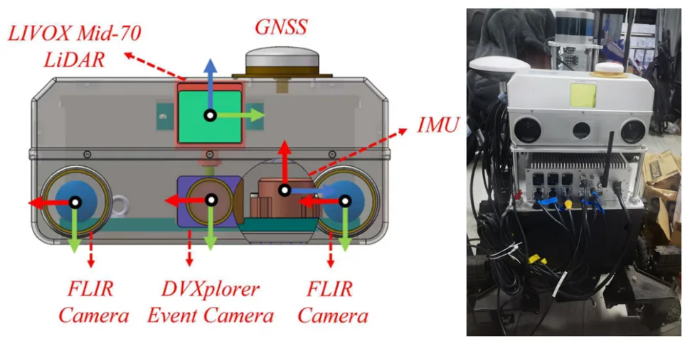
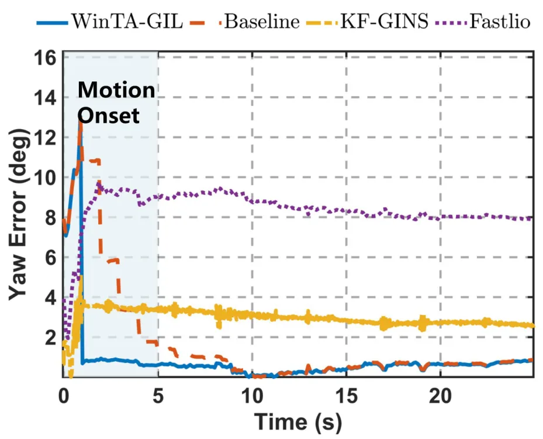
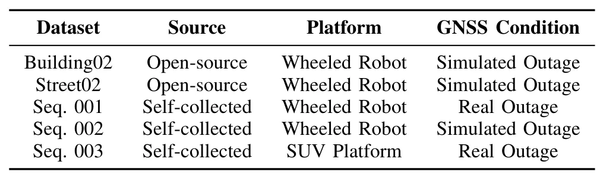
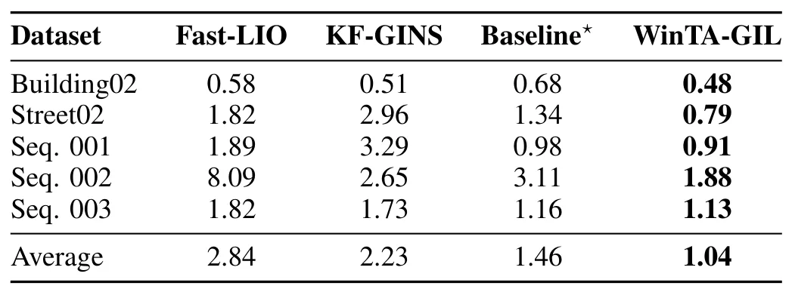
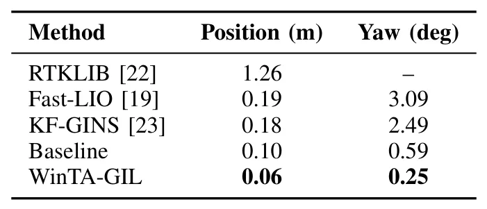

WinTA-GIL：间歇信号环境下 GNSS-IMU-LiDAR 航向细化的窗口化轨迹对齐WinTA-GIL: Windowed Trajectory Alignment for GNSS-IMU-LiDAR Heading Refinement in Intermittent Signal Environments
直接覆盖 GNSS-IMU-LiDAR 融合定位、城市峡谷/信号中断和航向弱可观问题，是今天 GNSS 专项最重要论文。
一句话工作总结
用 LIO 局部轨迹与 GNSS 观测反复窗口对齐，解决 GNSS 断续场景下航向漂移。
摘要
WinTA-GIL 针对复杂环境中航向估计弱可观、GNSS 信号间歇可用和 IMU 漂移累积的问题，利用 LiDAR-Inertial Odometry 的局部高精度轨迹与过滤后的 GNSS 观测做时间窗口一致性优化。方法引入状态判别驱动的自适应重估机制，在需要时触发航向校正，以抑制长期导航中的航向漂移。
Although multi-source fusion positioning systems have achieved significant progress, accurate and reliable heading estimation remains a critical challenge due to the lack of gravitational constraints and the inherent weak observability of heading in complex environments. Most existing methodologies are specifically tailored for the startup phase, relying on a singular initial alignment to establish the heading reference. Consequently, these approaches lack the adaptability required to refine heading estimates dynamically, which renders the system highly vulnerable to accumulated drift and observation noise during prolonged navigation or immediately following GNSS signal outages. To address these limitations, this paper proposes WinTA-GIL, a novel heading refinement framework that integrates information from Global Navigation Satellite System (GNSS), Inertial Measurement Unit (IMU), and Light Detection and Ranging (LiDAR) through a temporal window-based optimization strategy. Unlike conventional alignment methods restricted to the startup phase, WinTA-GIL leverages high-precision local trajectories from LiDAR-Inertial Odometry (LIO) to register against filtered GNSS observations. This approach transforms heading estimation into a repeatable, trajectory-based consistency optimization problem. In particular, an adaptive re-estimation mechanism based on state discrimination is incorporated to trigger heading corrections whenever necessary, thereby effectively suppressing the inertial drift accumulated during challenging conditions. Extensive experiments on both open-source and self-collected datasets demonstrate that WinTA-GIL significantly outperforms state-of-the-art approaches in both estimation accuracy and system robustness.
中文解读摘录
- 链接：https://arxiv.org/abs/2607.04879 ｜ PDF：https://arxiv.org/pdf/2607.04879
- 中文题名：WinTA-GIL：间歇信号环境下 GNSS-IMU-LiDAR 航向细化的窗口化轨迹对齐
- 关键信息：用 LiDAR-Inertial Odometry 的局部高精度轨迹与过滤后的 GNSS 观测做时间窗口对齐，把航向估计转化为可重复触发的轨迹一致性优化问题。
- 为什么值得看：直接命中城市峡谷/遮挡环境中 GNSS 断续、IMU 航向弱可观、LIO 漂移累积的问题；比只在启动阶段做一次初始对准更适合长时间导航。
- 需要核查：GNSS 观测过滤与异常值抑制策略、重估触发条件、航向校正对位置/速度状态的一致性影响，以及是否能扩展到因子图紧耦合框架。
图表/页面预览
{kind=link}

{kind=link}

{kind=link}

{kind=link}

{kind=link}

{kind=link}

{kind=link}

{kind=link}

{kind=link}
